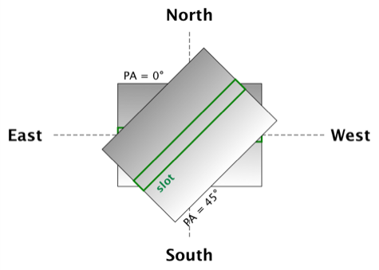

This document outlines the data model for SALT proposals. While it is based on the current proposal schema, it makes various changes.
1. Proposal
A proposal is a request for observations to be taken. It is limited to a single semester, although in the case of a phase 1 proposal it may apply for time in multiple semesters.
| Contrary to the current schema, this means that a completely new phase 2 proposal must be submitted for a new semester. |
A phase 1 proposal includes
-
general information
-
partners
-
investigators
-
targets
-
observations
-
instrument configurations
A phase 2 proposal includes
-
general information
-
investigators
-
targets
-
instrument configurations
-
blocks
-
pools
All of these are explained in detail in the sections below.
1.1. General information (phase 1 and 2)
1.1.1. Proposal code (phase 1 and 2)
The proposal code identifies a proposal across submissions and semesters; if two proposals have the same proposal code, they refer to the same observing programme. A proposal code is of the form YYYY-S-TYPE-NUMBER, where YYYY is the year, S the semester (i.e. 1 or 2), TYPE is a type identifier (see proposal types) and NUMBER is a running number. Examples would be 2020-1-SCI-042 or 2021-2-DDT-006.
1.1.2. Proposal type (phase 1 and 2)
The available proposal types are listed in the table below, together with the corresponding type identifiers used in proposal codes.
| Proposal Type | Description | Type identifier | Phases |
|---|---|---|---|
Science |
"Normal" science proposal |
SCI |
1 and 2 |
Multisemester |
Proposal for an observation program which is intended to last for more than one semester |
MLT |
1 and 2 |
Large Science Program |
Proposal requesting more than 150 hours of observing time, which can be spread over six semesters |
LSP |
1 and 2 |
Director’s Discretionary Time |
Proposal with time allocated outside the normal TAC process. Contrary to other proposal types, no investigator has to belong to a SALT partner |
DDT |
2 only |
Gravitational Wave Event |
Follow-up of a gravitational wave event |
GWE |
2 only |
Science Verification |
Science verification proposal |
SVP |
2 only |
Commissioning |
Commissioning proposal |
COM |
2 only |
OPTICON |
Proposal which has been allocated time by OPTICON |
OPT |
2 only |
The last column is explained in the Phase section.
1.1.3. Title (phase 1 and 2)
The proposal title.
1.1.4. Abstract (phase 1 and 2)
The proposal abstract.
1.1.5. Period (phase 1 and 2)
The period for which the proposal is submitted. In case of a Phase 1 proposal this is the period of the call for proposals. A period consists of a year and a semester, and is usually written as YYYY-S with the year YYYY and semester S. The semester can be either 1 (from May to October) or 2 (from November to April of the following year). See the following table for examples.
| Period | Date range |
|---|---|
2020-1 |
1 May 2020 — 31 October 2020 |
2020-2 |
1 November 2020 - 30 April 2021 |
2021-1 |
1 May 2021 — 31 October 2021 |
2021-2 |
1 November 2021 - 30 April 2022 |
| The term period has been borrowed from ESO. The term semester is used for it elsewhere, but this has the slightly annoying consequence that a semester contains a semester. |
1.1.6. Phase (phase 1 and 2)
The proposal phase, which can be either 1 or 2. Phase 1 proposals submitted in response to a call for proposals and request observing time as part of the normal TAC process. They mainly contain the scientific justification, the time requests, the targets, the investigators and some basic instrument configuration information.
A phase 2 proposal contains all the details required for carrying out the observations of the proposal.
While usually both a phase 1 and (assuming time is granted) a phase 2 proposal need to be submitted, proposals outside the normal TAC process only require a phase 2 submission. See the table in the Proposal Type section for details.
1.1.7. Time requests (phase 1)
A time request includes
-
the amount of requested time
-
the period for which the time is requested
-
the minimum useful time
-
optionally a comment
A proposal may have multiple time requests, but only one request per period. One of the time requests should be for the proposal period (i.e. the period of the call for proposals in response to which the proposal is submitted), and no time request should be for a period earlier than the proposal period.
1.1.8. Scientific justification (phase 1 and 2)
A pdf for providing scientific background and justification, as well as illustrating the technical feasibility of the planned observations. This should be created from a LaTeX or Word template (which may depend on the proposal type). However, this is not enforced programmatically.
| At the moment, the use of the correct template is checked. But this might be more pain than gain. |
The proposal does not include the actual pdf, but a URI for it. This URI must have been issued by SALT. In other words, the pdf must have been uploaded prior to the proposal submission.
1.1.9. Target of Opportunity (phase 1)
A flag indicating whether the proposal includes target of opportunity observations.
1.1.10. Time Critical (phase 1)
A flag indicating whether the proposal includes observations which are time critical.
1.1.11. Priority 4 (phase 1)
A flag indicating whether this is a proposal which requests priority 4 time only.
1.1.12. Related theses (phase 1)
Student theses which would use data for this proposal. For each thesis the following details should be included,
-
the student (who must be an investigator for the proposal)
-
the type of degree (Masters or PhD)
-
the expected year of completion
-
the relevance of the data for the thesis
The relevance of the data needs to be included only if the proposal requests time from the South African TAC.
1.1.13. External funding (phase 1)
A free-form string naming any non-SALT funding source(s). This is for the benefit of the PI only.
1.1.14. Previous proposals (phase 1)
A list of the PI’s proposals from the previous four periods. Each proposal includes
-
the proposal code
-
a comment on the proposal status
1.1.15. Publications (phase 1)
A list of publications by any of the investigators which are of relevance for this proposal. These are given as a list of bibcodes.
| This is new (and borrowed from ESO). |
1.1.16. Summary for the general public
A short summary which may be shared with the general public.
1.1.17. Allow details to be displayed
A flag for allowing that the proposal title, PI and summary are shown during to the general public during an observation, for example by tweeting them.
2. Partner (phase 1)
Partner related details for the proposal.
2.1. Partner code
A unique code identifier for the partner, as given in the following table.
| Partner code | Partner |
|---|---|
AMNH |
American Museum of Natural History |
CMU |
Carnegie Mellon University |
DC |
Dartmouth College |
DUR |
Durham University |
GU |
Georg-August-Universitt Gttingen |
HET |
Hobby Eberly Telescope Board |
IUCAA |
Inter-University Centre for Astronomy & Astrophysics |
POL |
Poland |
RSA |
South Africa |
RU |
Rutgers University |
UC |
University of Canterbury |
UKSC |
UK SALT Consortium |
UNC |
University of North Carolina - Chapel Hill |
UW |
University of Wisconsin-Madison |
2.2. Requested time share
The amount of time requested from the partner, as a percentage. The requested time shares must add up to 100 %.
2.3. Role of investigators
The role the investigators (including students) of this proposal. This is only required for LSP proposals requesting time from the South African TAC.
3. Investigator (phase 1 and 2)
At the moment, the proposal contains contact details as well as the partner affiliation. This more or less by implication means that users cannot easily update their contact details. Also, including these details in a proposal implies duplication of information.
For these reasons the data model does not include contact details or partner affiliations any longer.
An investigator thus is just a unique identifier. This must be the identifier for the user in the authentication service.
At the moment this might be the primary key in the PiptUser table of the SDB. However, the authentication system might be overhauled.
|
4. Target (phase 1 and 2)
A target is an object to be observed as part of the proposal.
| Targets can have no finding charts any longer. Also, the flag distinguishing between mandatory and optional targets exists no longer; there is a respective flag for observations now. |
4.1. Target name
The name of the target. This must be unique within a proposal.
4.2. Target code
A string identifying this target. The target code should be unique within a proposal and should not change across submissions. However, different proposals may have targets with the same code; global uniqueness is not guaranteed.
4.3. Version
Version of this target (information). A particular combination of target code and version can only be submitted once. In other words, if you need to resubmit a target, you need to change the version first.
| This is a new requirement and is motivated by a similar requirement for blocks. |
4.4. Target type
The target type, as a standard name defined by the SIMBAD object classification. Examples are "AbsLineSystem", "Candidate_LMXB" and "Planet?".
4.5. Target ephemerides
The target ephemeris. This may be either of coordinates, a Horizons identifier or a dummy target flag.
4.5.1. Coordinates
The coordinates include
-
the right ascension, as an angle between 0 and 360 degrees
-
the declination, as an angle between -90 and 90 degrees
-
the equinox, as a float
For targets with a high proper motion the following may be added:
-
the proper motion for the right ascension (in arcseconds per year)
-
the proper motion for the declination (in arcseconds per year)
-
the epoch as an ISO 8601 datetime string.
4.5.2. Horizons identifier
An identifier understood by NASA JPL’s Horizons service. This may be an object name (such as "Ubuntu") or a designation (such as "2005 EW302").
| There used to be an output interval as well. However, this seems unnecessary. |
4.5.3. Dummy target
A flag indicating that the target is a dummy target only.
4.6. Magnitude range
The magnitude range includes
-
the minimum (brightest) magnitude
-
the maximum (faintest) magnitude
-
the bandpass for the magnitude range, which must be any of U, B, V, R or I.
4.7. Phase
In order to easily define observing windows details about a variable target’s phase may be provided.
4.7.1. Time of phase zero
A datetime at which the target’s phase is 0. This should be an ISO 8601 datetime string.
4.7.2. Time base
The timebase to use. This may be Julian Day, Heliocentric Julian Day or Barycentric Julian Day.
4.7.3. Period
The period of variability, in days.
| There used to be rate of change of the period as well. This has rarely (if ever) been used and has been dropped. |
5. Observation (phase 1)
5.1. Target
A reference to a target. The target must exist in the proposal.
5.2. Observing time
The observing time for all visits of the observation combined. Thias includes acquisition and overhead times. The time is given in seconds.
5.3. Visits
The number of visits, i.e. how often the observation is to be carried out.
5.4. Maximum lunar phase
The maximum lunar phase at which this observation can be done (see ???).
5.5. Ranking
A measure of the importance of this observation relative to the other observations in the proposal. The following values are possible.
| Ranking |
|---|
High |
Low |
Medium |
5.6. Optional flag
A flag indicating that the observation is optional, i.e. belongs to a pool of observations out of which only a subset needs to be observed.
6. Instrument configuration (phase 1)
An instrument configuration for phase 1 contains a name, simulations and details for one instrument (Salticam, RSS, HRS or BVIT).
6.1. Name
A name for the configuration. This must be unique within the proposal.
6.2. Simulations
A list of simulations. Each simulation includes a URI and a comment.
6.2.1. File URI
URI for the simulation file. This file must be viewable in the simulation tool for the instrument used by this configuration. The URI must have been assigned by SALT. In other words, the simulation file must have been uploaded to SALT before the proposal is submitted.
6.2.2. Comment
An optional comment regarding the simulation.
6.3. Salticam
6.3.1. Detector mode
The detector mode. This must be any of the available detector modes for Salticam (see ???).
6.3.2. Filters
A list of filters. Each filter must be any of the available filters for Salticam (see ???).
6.4. RSS
| The slit type is not included any longer. |
A name for the configuration. This must be unique within the proposal.
6.4.1. Detector mode
The detector mode. This must be any of the available detector modes for RSS (see ???).
6.4.2. RSS mode
The mode in which RSS is operated. This can be any of the following.
| Mode mode |
|---|
Fabry-Perot |
Fabry-Perot polarimetry |
Imaging |
Imaging polarimetry |
MOS |
MOS polarimetry |
Spectropolarimetry |
Spectroscopy |
6.4.3. Polarimetry
The type of polarimetry. Any of the following types are allowed.
| Polarimetry type |
|---|
All Stokes |
Circular |
Circular Hi |
Linear |
Linear Hi |
User Defined |
The polarimetry type is only relevant if a polarimetric RSS mode has been chosen.
6.4.4. Grating
The grating to use for a spectroscopic or spectropolarimetric setup. Any of the available RSS gratings (see ???) can be chosen.
6.5. HRS
6.5.1. Mode
The HRS mode, which can be any of the available HRS modes (see ???).
6.6. BVIT
6.6.1. Filter
The filter, which can be any of the available BVIT filters (see ???).
7. Pool (phase 2)
A pool is a group of blocks, and every block must be a member of exactly one pool. A pool rule describes how to observe the pool blocks.
In most cases the PI has no need to group blocks. Such ungrouped blocks are collected in a default pool.
7.1. Blocks
A list of blocks. The list items are the actual blocks, not references.
7.2. Pool rule
A rule describing how to observe the pool blocks. This a string which conforms to the SALT proposal DSL. Any parameters must be included in the rule.For example, if a subset of the blocks are to be observed and 3000 seconds of priority 1 and 4000 seconds of priority 2 time should be spent on the pool, the rule might look as follows.
OBSERVE ANY BLOCKS FOR 3000 SECONDS WITH PRIORITY 1 AND FOR 4000 SECONDS WITH PRIORITY 2.
The rule for the default pool might look as follows.
OBSERVE ALL BLOCKS
Finally, the rule for a pool aimed at monitoring a target might look as follows.
OBSERVE ALL BLOCKS WITH A WAITING TIME OF 5 DAYS
| The precise wording will probably change, as the DSL has not been defined yet. |
8. Block
A block is the smallest schedulable unit in a proposal — it is observed in total, or not all, and its observation does not imply that any other block is observed. A block can have multiple visits, which are observed inependent of each. So strictly speaking, a single visit of a block is the smallest schedulable unit.
A block consists of general information, an acquisition and one or more telescope configurations.
| There are no subblocks, subsubblocks and pointings any longer. |
8.1. General information
|
The following have been dropped:
|
8.1.1. Name
The name of the block. This must be unique within the proposal.
8.1.2. Identifier
A unique identifier for this block. The identifier must be unique for a proposal, but not necessarily across proposals.
8.1.3. Version
The version of this block, starting with 1. Once submitted, the version of a block cannot be changed any longer. More precisely, an attempt to resubmit it (with more than the identifier and version information) should result in an error.
8.1.4. Comment
A note about the block, aimed primarily at the observer.
8.1.5. Priority
The priority for the block. This is an integer between 0 and 4 inclusive.
8.1.6. Ranking
The importance of this block relative to other blocks of the same priority in this proposal. The following values are possible.
| Ranking |
|---|
High |
Low |
Medium |
8.1.7. Visits
The number of visits, i.e.the number of times the block should be observed in the semester for this proposal.
8.1.8. Maximum number of visits for all semesters
The maximum number of visits for all semesters combined.
8.1.9. Time between visits
The minimum number of days between consecutive visits. A value of 1day means that the next visit can be obsertved the following night.
8.1.10. Transparency
The sky transparency required for the observation, which can be any of the following.
| Transparency |
|---|
Any |
Clear |
Thick cloud |
Thin cloud |
8.1.11. Maximum lunar illuminated fraction
The maximum illuminated fraction of the Moon for which the observation can be carried out if the Moon is above the horizon. The illuminated fraction \(k\) is related to the lunar phase \(\alpha\) (i.e. the angle between Sun, Earth and Moon):
\(k\) is a value between 0 (new moon) and 1 (full moon).
8.1.12. Minimum lunar distance
The minimum lunar distance required for the observation. The lunar distance \(\theta\) is the angle between the Moon and the target,
Here \(\alpha\) and \(\delta\) are the right ascension and declination, respectively. Essentially this formula uses the scalar product between two unit vectors on the celestial sphere.
8.1.13. Minimum seeing
The minimum zenithal seeing required for the observation. The default value is 0.1 arcseconds, and in most cases this is the value to choose. The seeing is given for the V band.
8.1.14. Maximum seeing
The maximum zenithal seeing required for the observation. The seeing is given for the V band.
8.1.15. Observation windows
Datetime intervals during which the block may be observed. The datetimes are given as an ISO 8601 datetime string.
8.1.16. Phase constraints
Phase intervals during which the block may be observed. This is relevant only if the target has a periodic variability.
8.1.17. User notification time
The time when the user should be notified of new data. This can be any of the following.
| User notification time |
|---|
When both the raw and reduced data are on the ftp server |
When the raw data are available in Cape Town |
8.2. Acquisition
8.2.1. Target
A reference to a target in this proposal.
8.2.2. Blind offset
The blind offset is characterised by
-
the coordinates of a reference star (as for a target)
-
the north and east offset (in arcseconds) of the invisible object
-
the magnitude of the invisible object
| Which bandpass is to be used for the magnitude? |
8.2.3. Bandpass
The bandpass to use for the acquisition image. This is merely a suggestion, which may be overruled by the observer.
8.2.4. Exposure time
The exposure time for the acquisition image. This is merely a suggestion, which may be overruled by the observer.
8.2.5. Finder charts
A list of finder charts. Each finder chart is a URI to a file. The URIs must have been assigned by SALT. In other words, the finder charts must have been uploaded before the proposal can be submitted.
The finder charts are optional; a finder chart is generated during submission and added to the proposal.
8.3. Telescope configuration
| This part requires some discussion! |
8.3.1. Iterations
The number of times this telescope configuration should be repeated.
8.3.2. Position angle
The position angle of the camera. This may be either of the following:
-
The angle from north (being zero), the positive direction being to the east.
 -
A flag indicating that a parallactic angle should be used.
8.3.3. Guide star
The guide star information includes
-
the coordinates (as for a target)
-
the magnitude of the guide star
8.3.4. Dither pattern
The dither pattern includes
-
the number of horizontal tiles
-
the number of vertical tiles
-
the number of dither steps
-
the offset (in arcseconds) between steps
| The dither pattern used to be defined on the instrument level. |
9. Payload configuration group
A group of payload configurations. This serves as a container to facilitate re-using payload configurations that logically belong together. This will mostly be a science configuration plus the corresponding calibrations.
9.1. Name
A name for this group. This is solely for the benefit of the PI, but must be unique within the proposal.
9.2. Payload configurations
A list of payload configurations.
10. Payload configuration
| Support for pellicle setups has been dropped. |
10.1. Identifier
An identifier for this payload configuration. The identifier should be unique within the proposal, but not necessarily across proposals.
10.2. Base configuration
A reference to another payload configuration in the proposal, on which this payload configuration is based. Properties are taken from the base configuration, unless they are explicitly defined in this payload configuration.
| This is a new feature and it intends to cater for the fact that science setups and their corresponding calibrations are very similar. It wasn’t necessary previously as calibrations were not explicitly included as separate payload configurations. |
10.3. Type
The payload configuration type, which can be any of the following.
| Payload configuration type |
|---|
Daytime calibration |
Instrument acquisition |
Nighttime calibration |
Science |
While acquisition is another payload configuration type, this is not included as acquisitions are handled separately.
10.4. Guide method
The method for guiding, which can be any of the following.
| Guide method |
|---|
Default |
HRS Probe |
None |
RSS Probe |
SALTICAM |
SALTICAM Probe |
10.5. Calibration filter
The calibration filter, if any. Any of the following values are allowed.
| Calibration filter |
|---|
Clear and ND |
Blue and Red |
Clear and UV |
ND and Clear |
None |
Red and Clear |
UV and Blue |
10.6. Instrument configuration
The instrument configuration is a reference to a Salticam, RSS, HRS or BVIT configuration.
11. Salticam configuration
11.1. Cycles
The number of times this configuration should be repeated. This should not be confused with detector iterations.
11.2. Exposures
A list of exposures, consisting of filters and exposure times.
11.2.1. Filter
A filter, which must be in the following list.
| Filter |
|---|
340nm 35nm FWHM |
380nm 40nm FWHM |
Cousins I |
Cousins R |
Empty/unknown filter |
Fused silica clear |
H-alpha |
H-beta narrow |
H-beta wide |
Johnson B |
Johnson U |
Johnson V |
SDSS g' |
SDSS i' |
SDSS r' |
SDSS u' |
SDSS z' |
SRE 1 |
SRE 2 |
SRE 3 |
SRE 4 |
Stroemgren b |
Stroemgren u |
Stroemgren v |
Stroemgren y |
11.2.2. Exposure time
The exposure time.
11.3. Detector configuration
| Support for CCD windows has been dropped. |
11.3.1. Detector mode
The detector mode. The following modes are available.
| Detector mode |
|---|
Drift Scan |
Frame Transfer |
Normal |
Slot Mode |
11.3.2. Row binning
The number of CCD rows combined during readout. This must be an integer between 1 and 9.
11.3.3. Column binning
The number of CCD columns combined during readout. This must be an integer between 1 and 9.
11.3.4. Exposure type
The exposure type. This should be any of the following.
| Exposure type |
|---|
Bias |
Flat field |
Science |
11.3.5. Gain
The detector gain. This should be any of the following.
| Gain | Description |
|---|---|
Bright |
Low gain for bright objects |
Faint |
High gain for faint objects |
11.3.6. Readout speed
The readout speed, which must be one of the following.
| Readout speed | Description |
|---|---|
Fast |
Higher noise, fast readout |
None |
No readout |
Slow |
Lower noise, slow readout |
11.3.7. Iterations
The number of exposures to take.
11.4. Flat field
A flag indicating that this a (nighttime) flat field setup.
11.5. Uncharged calibrations
The list of calibrations which should be taken and are not charged for. The following calibrations are available.
| Uncharged calibration |
|---|
Biases |
Imaging lamp flats |
Twilight flats |
Glossary
- Bibcode
- BVIT
-
Berkeley Visible Image Tube
- DSL
-
Domain-specific language
- ESO
-
European Southern Observatory
- HRS
-
High Resolution Spectrograph
- LSP
-
Large Science Program
- PI
-
Principal Investigator
- RSS
-
Robert Stobie Spectrograph
- SALT
-
Southern African Large Telescope
- SDB
-
SALT Science Database
- SIMBAD
-
Astronomical database of objects beyond the Solar System, maintained by the Centre de donnes astronomiques de Strasbourg (CDS)
- TAC
-
time allocation committee